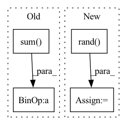

Pattern ID :29614

Before Change
normal_noise = torch.randn_like(x)
x = x * block_mask + normal_noise * (1 - block_mask)
else:
normalize_scale = block_mask.numel() / (torch.sum(block_mask) + 1e-7)
x = x * block_mask * normalize_scale
return x
After Change
if batchwise:
// one mask for whole batch, quite a bit faster
uniform_noise = torch.rand((1, C, H, W), dtype=x.dtype, device=x.device)
else:
uniform_noise = torch.rand_like(x)
block_mask = ((2 - gamma - valid_block + uniform_noise) >= 1).to(dtype=x.dtype)
block_mask = -F.max_pool2d(
In pattern: SUPERPATTERN
Frequency: 3
Non-data size: 4
Instances
Fragment ID: 87740955
Project Name: feng-lab/pytorch-image-models
Commit Name: 1904ed8fecdb3f37818378421350315d2abf1224
Time: 2020-05-13
Author: rwightman@gmail.com
File Name: timm/models/layers/drop.py
M Class Name: AnonimousClass
N Class Name: AnonimousClass
M Method Name: drop_block_2d(7)
N Method Name: drop_block_2d(6)
M Parent Class:
N Parent Class:
M File Name: timm/models/layers/drop.py
N File Name: timm/models/layers/drop.py
M Start Line: 25
M End Line: 62
N Start Line: 26
N End Line: 69
'>
Before Change
// initial energy terms
U = pdf(q)
K = 0.5 * p.sum(1)
// half step in momentum space
p -= 0.5 * epsilon * get_grad(pdf,q)
After Change
Enew = U(q) + 0.5*(p**2).sum(1)
// metropolix accept/reject
eps = torch.rand(Enew.shape)
cond = (torch.exp(Einit-Enew) < eps).view(-1)
q[cond] = qinit[cond]
// comute the accept rate
'>
Fragment ID: 87740943
Project Name: nlesc-jcer/qmctorch
Commit Name: ef3c133fcc9cf2093881c93d9001cb7ae1651bcd
Time: 2019-07-02
Author: nicolas.gm.renaud@gmail.com
File Name: pyCHAMP/sampler/hamiltonian.py
M Class Name: HAMILTONIAN_TORCH
N Class Name: HAMILTONIAN_TORCH
M Method Name: _step(5)
N Method Name: _step(5)
M Parent Class: SAMPLER_BASE
N Parent Class: SAMPLER_BASE
M File Name: pyCHAMP/sampler/hamiltonian.py
N File Name: pyCHAMP/sampler/hamiltonian.py
M Start Line: 104
M End Line: 135
N Start Line: 107
N End Line: 139
'>
Before Change
noise = (np.random.randn(points.shape[0], points.shape[1]) *
noise_level).astype(np.float32)
augmented_points = np.sum(np.expand_dims(points, 2) * R,
axis=1) * scale + noise
return augmented_points.astype(np.float32)
After Change
return points
// Initialize rotation matrix
R = np.eye(points.shape[1]) + np.random.rand(3, 3) * 0.1
R[0][0] *= np.random.randint(0, 2) * 2 - 1 // Randomply flip x dimension.
if points.shape[1] == 3:
rotation_method = t_augment.get("rotation_method", None)
if rotation_method == "vertical":
// Create random rotations
theta = np.random.rand() * 2 * np.pi
c, s = np.cos(theta), np.sin(theta)
R = np.matmul(
R, np.array([[c, -s, 0], [s, c, 0], [0, 0, 1]],
dtype=np.float32))
elif rotation_method == "all":
// Choose two random angles for the first vector in polar coordinates
theta = np.random.rand() * 2 * np.pi
phi = (np.random.rand() - 0.5) * np.pi
// Create the first vector in carthesian coordinates
u = np.array([
np.cos(theta) * np.cos(phi),
np.sin(theta) * np.cos(phi),
np.sin(phi)
])
// Choose a random rotation angle
alpha = np.random.rand() * 2 * np.pi
// Create the rotation matrix with this vector and angle
R = create_3D_rotations(np.reshape(u, (1, -1)),
np.reshape(alpha, (1, -1)))[0]
R = R.astype(np.float32)
// Choose random scales for each example
scale_anisotropic = t_augment.get("scale_anisotropic", False)
min_s = t_augment.get("min_s", 1.)
max_s = t_augment.get("max_s", 1.)
if scale_anisotropic:
scale = np.random.rand(points.shape[1]) * (max_s - min_s) + min_s
else:
scale = np.random.rand() * (max_s - min_s) + min_s
// TODO: add symmetric augmentation
// // Add random symmetries to the scale factor
// symmetries = []
// sym = t_augment.get("symmetries", [False, False, False])
// for i in range(3):
// if sym[i]:
// symmetries.append(tf.round(tf.random_uniform((1, 1))) * 2 - 1)
// else:
// symmetries.append(tf.ones([1, 1], dtype=tf.float32))
// symmetries = np.array(symmetries).astype(np.int32)
// symmetries = symmetries * np.random.randint(2, size=points.shape[1])
// scale = (scale * (1 - symmetries * 2)).astype(np.float32)
noise_level = t_augment.get("noise_level", 0.001)
noise = (np.random.randn(points.shape[0], points.shape[1]) *
noise_level).astype(np.float32)
augmented_points = np.matmul(points, R) * scale + noise
return augmented_points.astype(np.float32)
'>
Fragment ID: 87740940
Project Name: isl-org/open3d-ml
Commit Name: 67123f7e9d5dbbe6a73c42ef648093a7d25ace4a
Time: 2021-05-11
Author: sanskaragrawal107@gmail.com
File Name: ml3d/datasets/utils/transforms.py
M Class Name: AnonimousClass
N Class Name: AnonimousClass
M Method Name: trans_augment(2)
N Method Name: trans_augment(2)
M Parent Class:
N Parent Class:
M File Name: ml3d/datasets/utils/transforms.py
N File Name: ml3d/datasets/utils/transforms.py
M Start Line: 35
M End Line: 96
N Start Line: 35
N End Line: 98